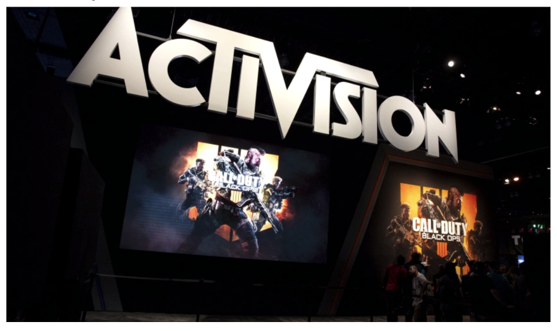
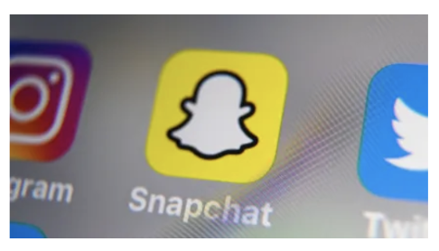
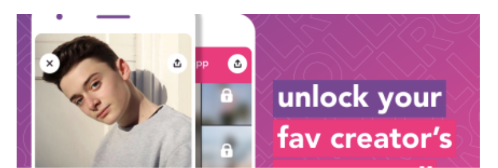

Microsoft to buy Activision Blizzard for$68.7 billion
Amanda Silberling

The Latest
Snapchat says it's getting better at finding illicit drug dealers before users do
Taylor Hatmker
11:15 AM PST ° January 18, 2022
Snapchat has faced increasing criticism in recent years as the opioid crisis plays out on social media, often with tragic results. In October, an NBC investigation reported the stories of a number ...

Will quantum computing remain the domain of the specialist VC?
Maria Lepskaya
11:06 AM PST ° January 18, 2022
Despite all the buzz, quatum investments are still not mainstream: there were about 90 quantum investments in 2021.
Ex-Dispo founding members launch Roll app, where creators post exclusive content
TSome Boody
11:15 AM PST ° January 18, 2022
Today marks the launch of the Roll app which aims to create an easy way for creators to make an extra buck while portraying a potentially more authenic version of themselves to their fans.
